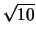
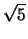
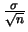
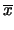

Algunos Ejemplos
Ejemplo 36
En una gran empresa el 60% de las personas tiene problemas de tensión. Cuál es la probabilidad de que en una muestra de 1000, 615 o más presenten este problema.
Solución
Este problema es de tipo binomial, puede resolverse calculando en forma directa 1 - B(614;1000,.6) lo que conduce al valor 0.158528,
También podemos recurrir a la aproximación normal de binomial y la probabilidad solicitada es:
Ejemplo 37
Las consultas a un sistema tienen una duración cuya media es de 4 segundos y su desviación estándar es de 1.5 segundos. Si llegan 50 consultas en forma independiente, cuál es la probabilidad de que las 50 tengan una duración promedio entre 3.5 y 3.8 segundos.
Solución
Si aplicamos los resultados descritos hasta ahora el promedio de
la muestra de las 50 consultas sigue una distribución que es
aproximadamente normal con media  = 4 y desviación
estándar
= 4 y desviación
estándar
 = 1.5/
= 1.5/ = 0.2121. Luego:
= 0.2121. Luego:
Ejemplo 38
Una sonda espacial cuenta con un juego de 10 computadores para controlar su estado. En todo momento se encuentra trabajando un único computador y estos trabajan en forma serial de manera que en el instante en que uno falle empieza a funcionar el siguiente, y así sucesivamente hasta utilizar los 10 computadores. La sonda está por pasar detrás de un planeta, por lo que se espera no tener comunicación con ella durante 4000 horas. Si cada computador opera correctamente 440 horas en promedio con una desviación estándar de 30 horas, entonces el tiempo acumulado de funcionamiento, Y de todas los computadores sigue una distribución que se puede aproximar por una normal con media 1440 y desviación estándar 30.

Si el promedio de funcionamiento de cada computador fuera de 410 horas y la desviación estándar de 30 entonces la probabilidad pedida sería:
| P[Y > 4000] | = | 1 - |
|
| = | 1 - |
||
| = | 1 - 0.14592 = 0.85408. |
Ejemplo 39
El rendimiento de cierto cilindro de gas está normalmente distribuido con una media de 6 horas y una desviación estándar de 0.5 horas. Este gas se vende en paquetes de 5 cilindros y en cada paquete se utilizan los cinco cilindros en forma secuencial, es decir se empieza uno solamente si se ha terminado el anterior.
Se desea determinar el tiempo máximo de duración de cada paquete de manera que éste sea excedido sólo por el 3% de los paquetes.
Solución
Como el tiempo de duración de cada cilindro es normal la distribución del tiempo TP = T1 + ... + T5 de cada paquete también es normal con media 30 y desviación estándar 0.5, lo que se solicita es un valor c tal que.
Ejemplo 40
La duración de una batidora de un cierto fabricante es de 5 años, con una desviación estándar de un año. Si asumimos que las duraciones de estos mezcladores siguen aproximadamente una distribución normal, la aplicación de los teoremas estudiados nos permiten hacer las siguientes deducciones.
Si se toma una muestra aleatoria de 9 de estas batidoras entonces
como la duración de un mezclador es de 5 años con una
desviación de 1 año, la duración promedio sigue una
distribución normal con la media de 5 años con una desviación
de
 =  = 0.3333.
= 0.3333.
Si se quiere la probabilidad de que en promedio este grupo dure entre 4.4 y 5.2 años se tiene
O por ejemplo el valor de  a la derecha del cual caería el 15% de las medias calculadas de la muestras aleatorias de tamaño 9 se obtiene del cálculo.
Ejemplo 41
Un médico atiende un paciente en un tiempo que
es una variable aleatoria con media  = 8 minutos y desviación
estándar 3 minutos. Si debe atender un total de 40 pacientes
la probabilidad de que atienda todos los pacientes en menos de 5
horas, asumiendo que los pacientes ingresan, en forma continua es
= 8 minutos y desviación
estándar 3 minutos. Si debe atender un total de 40 pacientes
la probabilidad de que atienda todos los pacientes en menos de 5
horas, asumiendo que los pacientes ingresan, en forma continua es